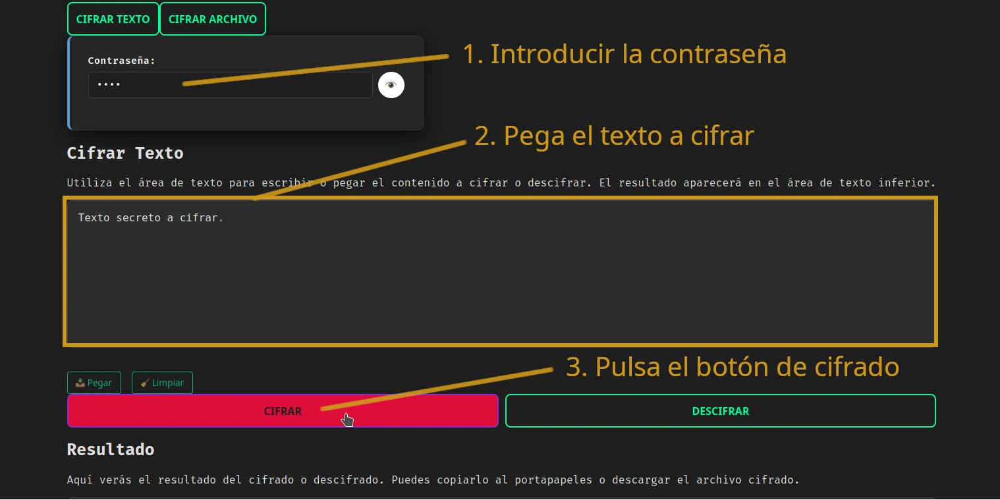

¿Qué significa cifrar texto online?
Cifrar texto online consiste en transformar un texto legible en un texto ilegible mediante un algoritmo de encriptación y una clave. Solo quien tenga la clave correcta podrá descifrarlo y recuperar el contenido original.
La diferencia clave de esta herramienta es que todo el cifrado se realiza localmente en tu navegador. El texto que escribes o pegas nunca se envía a servidores externos.
Cómo cifrar texto online paso a paso
A continuación tienes una guía rápida para cifrar texto usando la aplicación web:
- Abre la herramienta: abrir cifrador de texto.
- Escribe o pega el texto que quieres cifrar en el área de texto principal.
- Introduce una clave de cifrado segura que solo tú y la persona destinataria conozcáis.
- Haz clic en el botón de cifrar para generar el texto cifrado.
- Copia el texto cifrado y guárdalo, envíalo por mensajería o almacénalo donde prefieras.
Cuando quieras recuperar el contenido original, solo tendrás que pegar el texto cifrado en la herramienta, introducir la misma clave y pulsar descifrar.


Ejemplo de interfaz para cifrar texto online en el navegador.
Ventajas de cifrar texto online en el navegador
- Privacidad total: el texto no se sube a servidores.
- Sin instalación: funciona directamente en el navegador.
- Rápido y ligero: ideal para notas, contraseñas y mensajes.
- Control de la clave: tú decides cómo compartir la clave de cifrado.
Buenas prácticas al cifrar texto online
Aunque la herramienta realiza el cifrado de forma local, es importante seguir algunas buenas prácticas de seguridad:
- Usa una clave de cifrado robusta, difícil de adivinar.
- No compartas la clave por el mismo canal donde envías el texto cifrado.
- Evita cifrar texto en dispositivos o redes que no sean de confianza.
- No reutilices la misma clave para todo si manejas información muy sensible.
🔐 ¿Qué algoritmo se usa para cifrar los archivos?
Los archivos se cifran con AES‑GCM, el mismo algoritmo utilizado en aplicaciones de seguridad modernas.
El archivo se procesa localmente en tu navegador mediante la WebCrypto API, generando un archivo cifrado en formato .enc.json.
Ningún archivo se sube a servidores.
Preguntas frecuentes sobre cifrar texto online
¿Se sube mi texto a algún servidor al cifrarlo?
No. En esta herramienta, todo el proceso de cifrado y descifrado se realiza en tu navegador. El texto no se envía ni se almacena en servidores externos.
¿Es seguro cifrar texto online?
Es seguro siempre que la encriptación se haga de forma local en tu dispositivo y que protejas bien la clave de cifrado. Esta aplicación está diseñada precisamente para que tus datos no salgan de tu navegador.
¿Puedo usarlo para información muy sensible?
Puedes usarlo para mejorar tu privacidad al compartir o almacenar texto cifrado. Aun así, es recomendable combinarlo con buenas prácticas de seguridad y valorar el nivel de sensibilidad de la información.
¿Necesito instalar algo?
No. Solo necesitas un navegador moderno. La herramienta funciona directamente desde la web, sin instalaciones ni extensiones.
¿Puedo cifrar archivos también?
Si quieres cifrar documentos, visita nuestra guía en cifrar archivos online.
Cifrar texto online ahora
Si quieres empezar a cifrar texto online de forma segura, puedes usar la herramienta gratuita disponible en este proyecto:
Abrir herramienta para cifrar textoTambién puedes:
- Visitar la página principal del cifrador para ver todas las funciones.
- (En el futuro) consultar la página sobre cifrar archivos online si quieres trabajar con documentos.